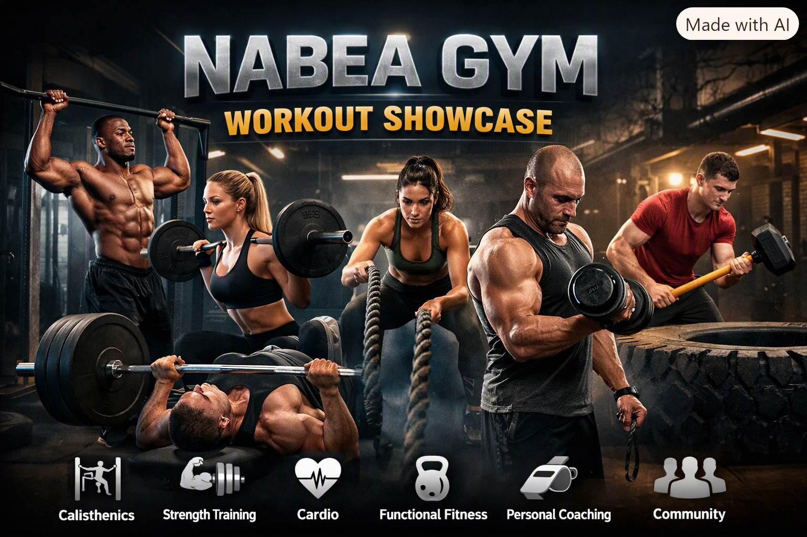

Welcome to Nabea Gym, where your fitness goals become a reality .
We believe that transformation is a personal journey that requires the right environment, expert guidance, and unwavering community support.
Our state-of-the-art facility is designed to inspire and motivate you at every step, whether you are stepping into a gym for the very first time or are an experienced athlete pushing for your next personal record. Let us help you unlock your full potential and build a healthier, stronger version of yourself.

Master the art of movement and build absolute relative strength with our dedicated calisthenics and bodyweight training programs. This discipline focuses on using your own body weight as resistance to develop exceptional core stability, flexibility, and functional upper-body power. From mastering foundational push-ups and pull-ups to progressing toward advanced skills like muscle-ups and handstands, our structured classes will help you control your body like never before.
f your goals are to build lean muscle mass, increase raw power, and sculpt your physique, our strength and hypertrophy program is built for you. Utilizing scientifically backed training principles, our routines focus on progressive overload through a mix of compound barbell movements, dumbbell variations, and specialized isolation machines. Our expert trainers will guide you through proper lifting mechanics to maximize muscle growth safely and efficiently
True fitness progress doesn't stop when your workout ends; it requires dedicated recovery. Our traditional sauna rooms offer the perfect environment to relax tight muscles, increase blood circulation, and accelerate metabolic waste removal after an intense training session. Regular sauna use helps reduce joint stiffness, alleviates stress, and promotes deeper, restorative sleep. Use our seamless booking system to reserve your slot and prioritize your post-workout wellness.
Experience elite-level athletic recovery with our specialized compression therapy rooms. Using advanced pneumatic compression sleeves for your legs and arms, this treatment mimics natural muscle pumping to flush out lactic acid, significantly reduce muscle soreness (DOMS), and accelerate tissue repair. Perfect for runners, lifters, and anyone looking to bounce back quickly for their next workout, our compression sessions will keep you feeling refreshed and ready to perform